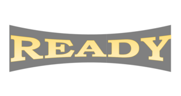
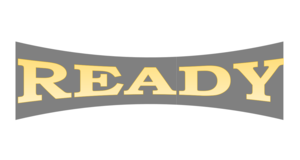

Társasjátékról:
- A ready ismeretterjesztő társasjáték kérdései az informatikára vonatkoznak.
- A kártyákon egy kérdés található, alatta pedig a választási lehetőségek.
- Háromfajta kártyapaklit tartalmaz a játék.
- Az a pakli, aminek a hátoldalán a játék logója található, az a nehéz kérdéseket tartalmazza. Aminek a hátoldalán számítógép van, azok egyszerű kérdéseket tartalmaznak.
- A harmadik kártyapakli programozással kapcsolatos kérdéseket tartalmaz.
- A hátoldalán a Python logó lesz.
- A pakliban még 2 darab Joker lap is lesz, ami azt teszi lehetővé, hogy a játékos kérdés nélkül megkapja.
Előkészületek:
- A játékosok előkészítik a kártyapaklikat, majd megegyeznek, ki melyik hátlappal ellátott kártyát fogja választani.
- Ezután a kártyapaklikat elhelyezik egy asztal közepére.
- A játékosok egy körben leülnek le.
- A játék megkezdése előtt eldönti a játékos, hogy a könnyebb vagy a nehezebb kérdéseket fogják egymásnak feltenni a játék során.
- Ezután máris kezdődhet a játék!
Játékmenet:
- A legfiatalabb játékos kezd, megkérdezi a tőle jobbra ülőtől, hogy melyik fajta kártyát szeretné választani.
- Felhúz egy kártyát és felteszi a rajta szereplő kérdést. Ha a játékos tud válaszolni a kérdésre, akkor megkaphatja a lapot.
- Az nyeri a játékot, aki a legtöbb kártyát össze tudja gyűjteni.
Logók a kártyák hátoldalán:
Vidd rá az egérmutatót, hogy lásd mit jelent!

